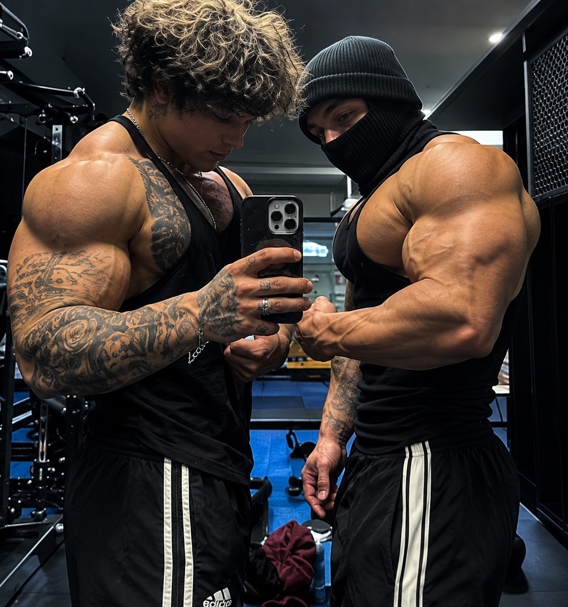

Bienvenido a mi pagina sobre mi hooby favorito, y es el ignasio y su estilo de vida.
El gym es un estilo de vida donde entrenas tu cuerpo y lo fortaleces tanto fisico como mental mente y lleva una constancia y disciplina
lo elegi porque me gusta mucho y me ayuda a sentirme fuerte mentalmente y con mas confianza conmigo mismo y un lugar donde conoces personas al igual que amigos y como un lugar que se siente como un hogar

Si quieres aprender mas sobre el gym y ser COMO CBUM O COMO YANIV:
sabias que para progresar en el gym debes hacer sobrecarga progresiva para que la fibras musculares se dañen y con eso se creen nuevas fibras y crezca el musculo.
otro dato curioso es que el musculo no crece mientras entrenas, sino mientras duermes. por eso dormir 7 a 8 horas es tan importante para que te pongas como CBUM O COMO YANIV.
en mi opinion, el gimnasio es mucho mas que un hobby. elegi el tema del gimnasio porque es lo que mas me apasiona hacer todos los dias y es parte de mi estilo de vida. lo que mas me gusta es la sensacion de superarme cada semana, levantar mas peso y ver como mi cuerpo y mi mente se hacen mas fuertes. tambien me gusta mucho el ambiente, porque conoces gente que te motiva a no rendirte. al investigar sobre el aprendi que no solo es entrenar, tambien es muy importante la alimentacion, el descanso y la disciplina para poder crecerde forma como yaniv.